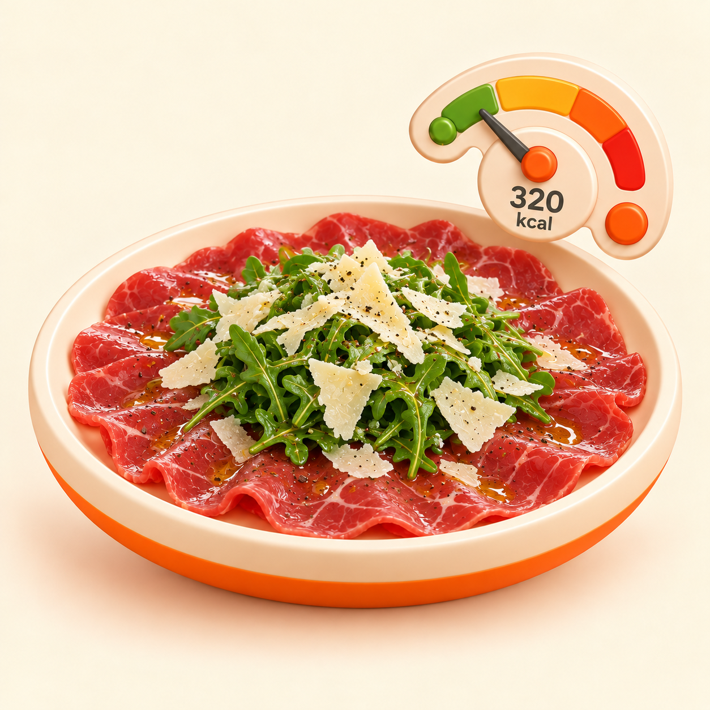
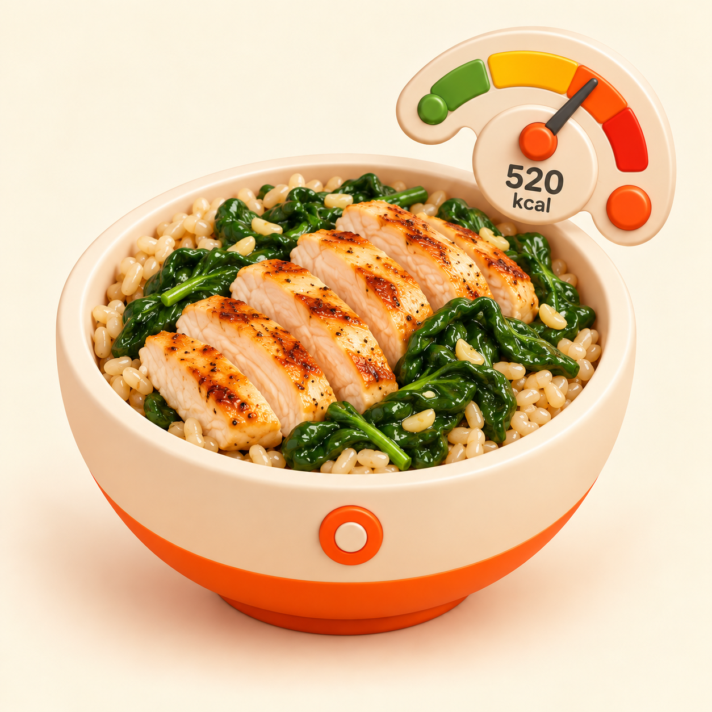
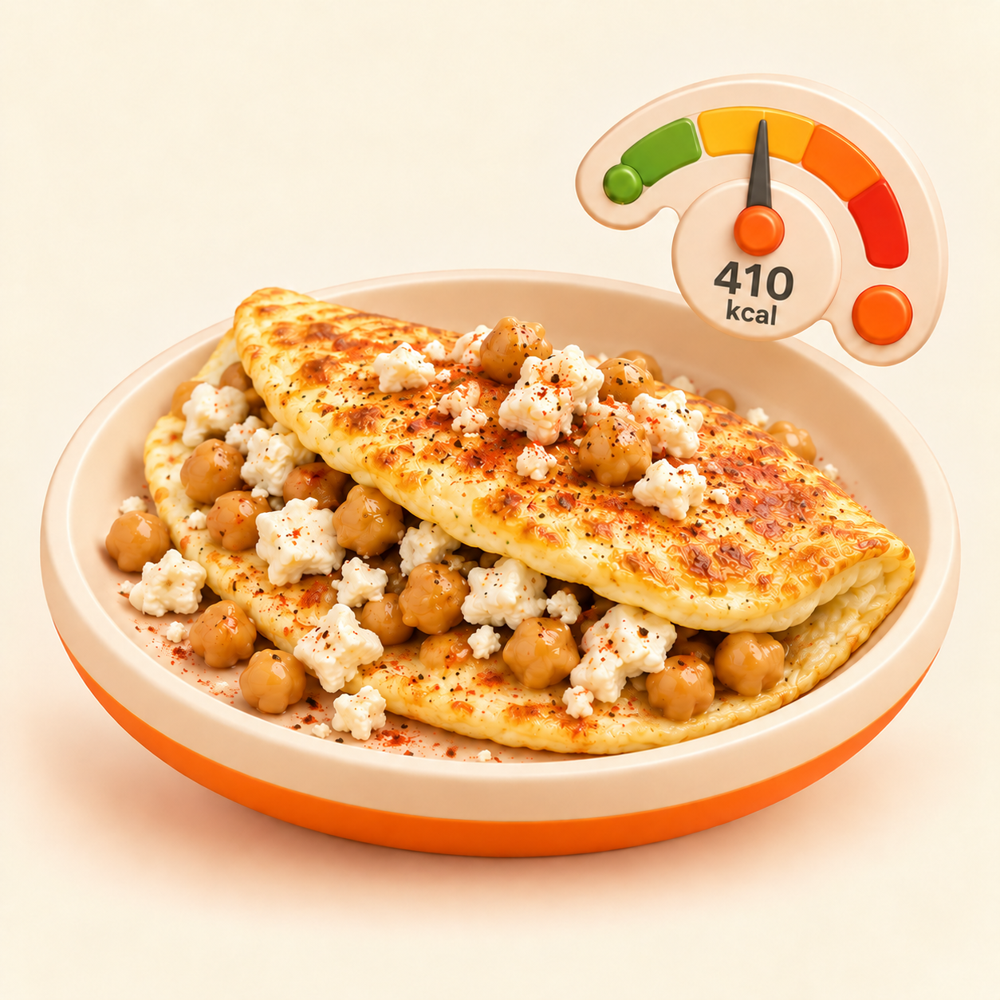
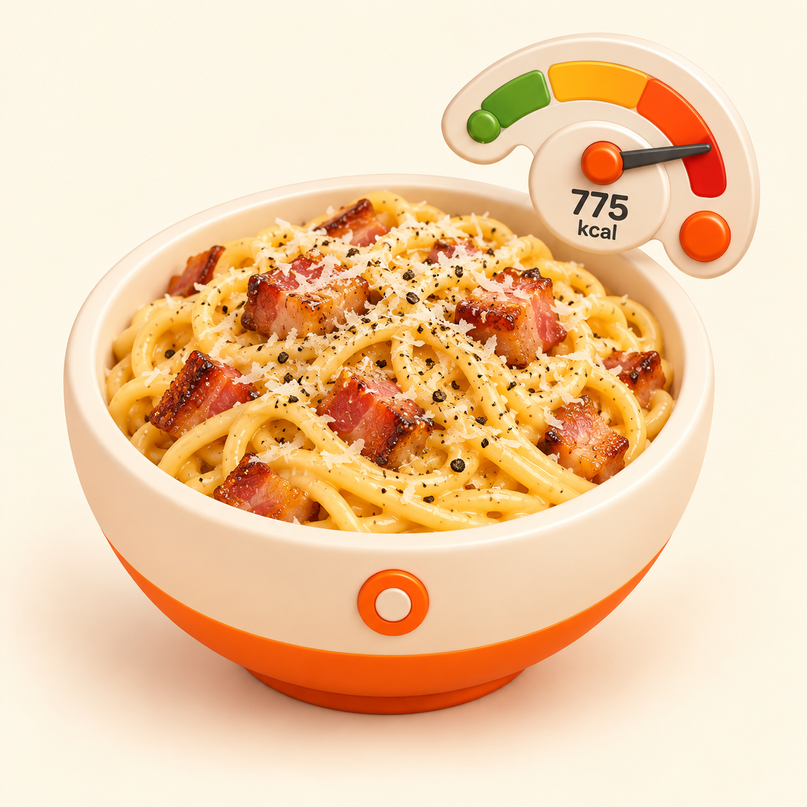
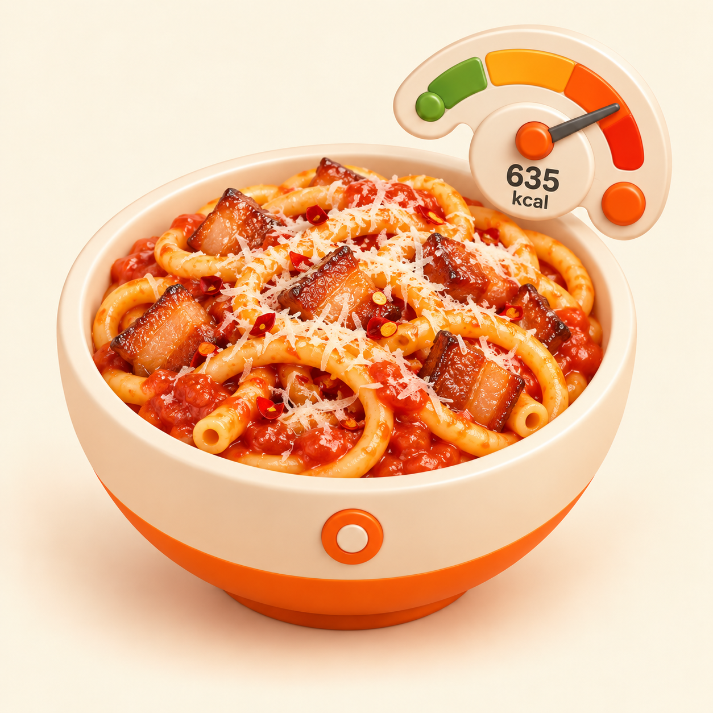
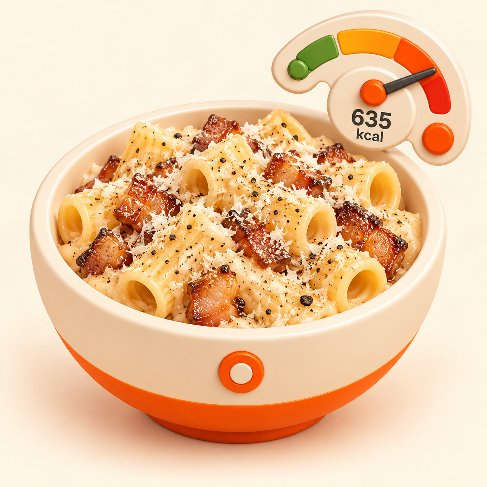
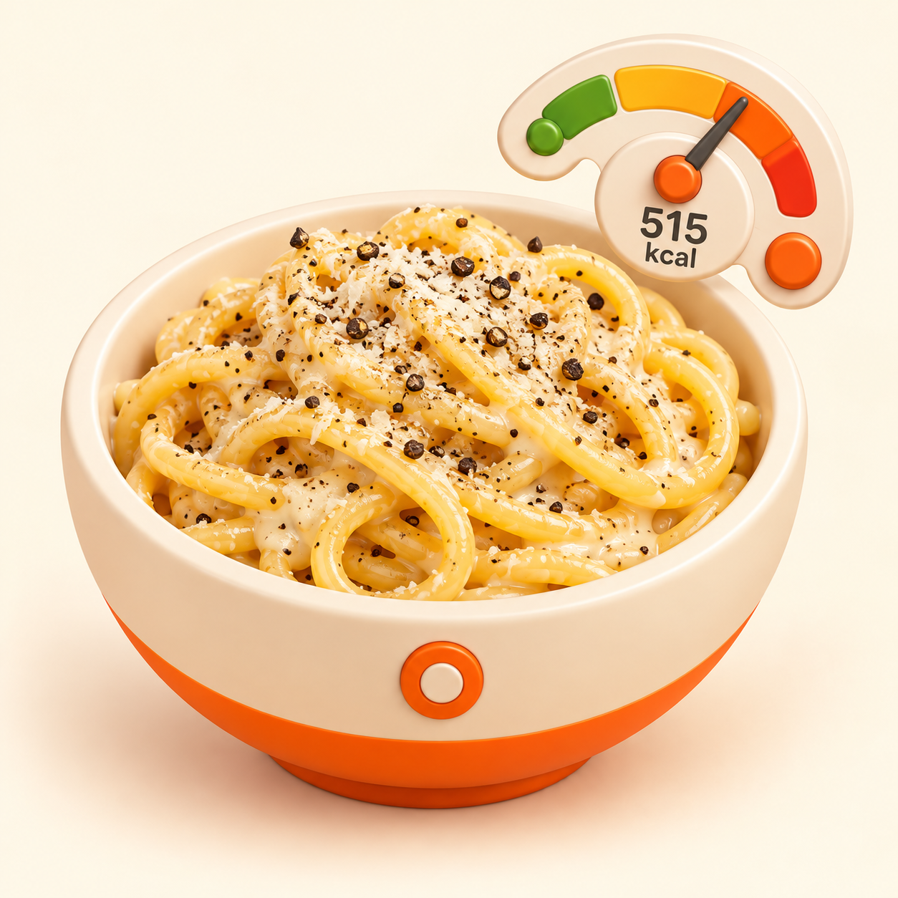
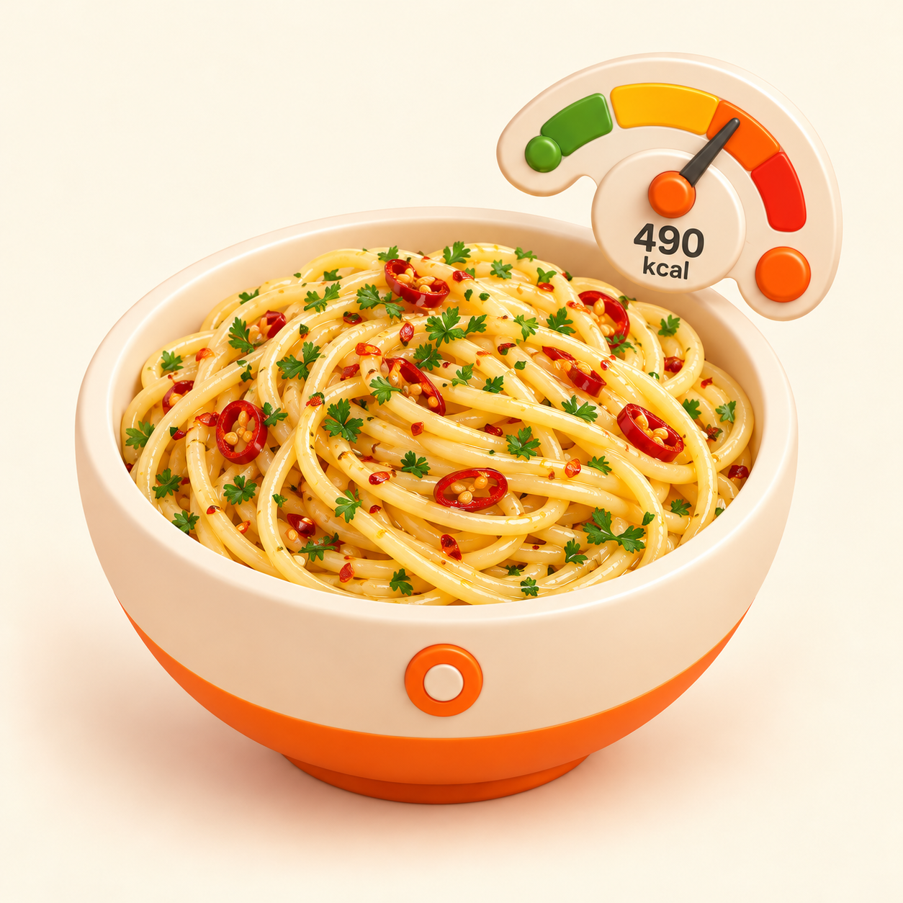
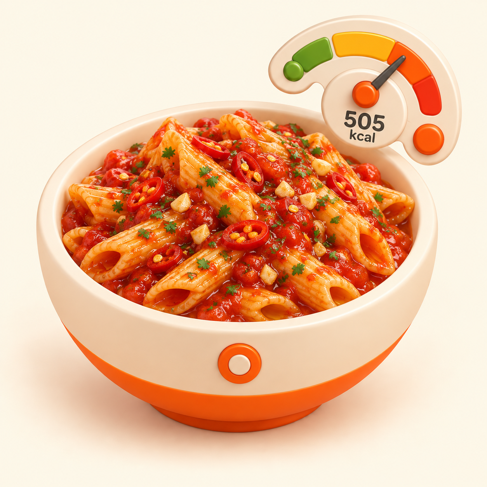
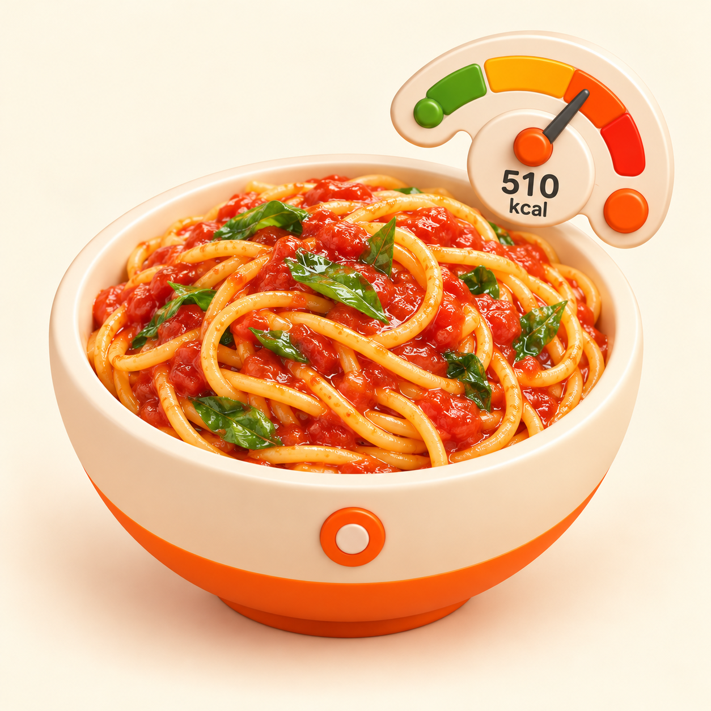

Catalog Batch 001 — review 10/10
Dieci Food Portrait con QA tecnico e visivo PASS. Sono candidate: nessun auto-freeze, integrazione o deploy. R4 è l’unico già approvato separatamente.








